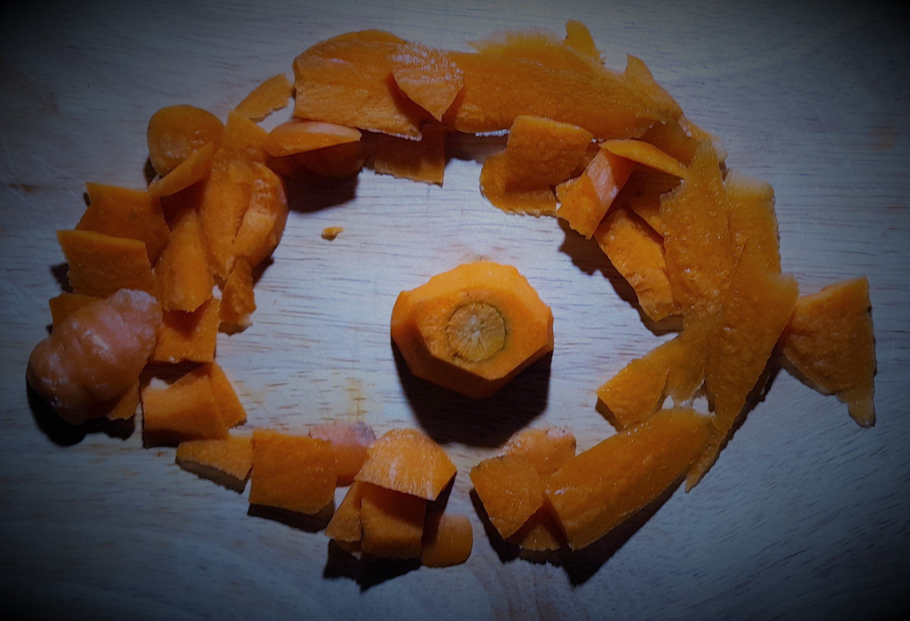

Epistemology:
Science & Tradition
Dr Shane V Crowley
Press down for controls and right to progress
Interacting with the Slides
üì∫Full screen: press the F key
üéÆView video controls: hover cursor over video
üë©‚Äçüé® Draw: click icon or press C
üåàPen colour: press X to cycle and Y to revert
üíÅ Options and Info: click icon or press M
To view the video just follow the links:
üëâhttps://youtu.be/GJN5I42LPoU

The Omnivore's Dilemma
Idea: the potential diversity of our diets creates a tension between neophilia üçç and neophobia üíÄ
The Omnivore's Dilemma
Critics argue food technology confuses with an impossible search for the healthy üèãÔ∏è‚Äç‚ôÄÔ∏è and unhealthy üç≠
For critics like Pollan, the only safe bet is to stick with what we know (tradition)
The Doctrine of Signatures
Is shape important? Yes. Can it guide dietary choice? Not really.
DoS was an example of traditional know-how that few would now accept.
Problems with DoS
- Assumption: the world is designed to serve us
- Scope: the theory has limited extension
- Easy-to-vary: DoS is highly subjective
DoS may be a good memory device but it cannot inform
successful dietary interventions, like vitamin fortification
Effect of Bread Fortification on US Pellegra Deaths
Adapted from McClements, D.J., Vega, C., McBride, A. E., & Decker, E. A. (2011). In Defence of Food Science. Gastronomica, Summer, 76-84.Kinds of Knowledge
Much knowledge of food is procedural
Science generates declarative knowledge
A feature of this knowledge is its generalisability
Scientists must often know the how (process/experiment) and the why (cause/explanation)
Obstacles to Knowledge

Obstacles to Knowledge
 Metaphor: thinking about the unfamiliar (meat searing) by analogy to the familiar (stopping bleeding)
Metaphor: thinking about the unfamiliar (meat searing) by analogy to the familiar (stopping bleeding)
Maillard Browning (MB)


Maillard Browning (MB)
Maillard browning: a chemical reaction involving amino acids and reducing sugars
Searing and Sous Vide
- MB is quicker at high temperature
- MB occurs in sous vide but is less advanced
- Sous vide and searing can be combined
- Adding glucose or alkali speeds up reaction
Click on the background video to see more
Traditional Know-how
Mac Con Iomaire, M. and P. Gallagher (2009). The Potato in Irish Cuisine and Culture. Journal of Culinary Science & Technology.The Irish had a peculiar way of cooking potatoes ‘with and without the bone or the moon’ [...] par boiling the potato leaving the core undercooked [...] The partially cooked potato lay in the stomach creating a second digestion period [...]
Depending on how we cook/process food we can alter how it is physically broken down in the bodyThere were hints of this idea in the old Irish tradition of undercooking potatoes. Science extends the basic idea, making ot more general and precise
Ideas are sometimes "out there" in the broader culture
You should pay attention to them if you want to develop new things
Scientific Know-why

Anti-science Rhetoric

Appeals to "common sense" knowledge of food
Be careful of falling into the trap of undermining science while doing science!!!Conclusion
Next week: The science in 'food science'
shane.crowley@ucc.ie